한눈에 보기
confmcp 는 Confluence Server 7.2.0 앞에 두는 MCP 게이트웨이로, 도커 이미지 하나와 PostgreSQL 만으로 동작합니다.
관리자는 ① 이미지를 적재하고 환경변수 네 개(DATABASE_URL, BOOTSTRAP_ADMIN, BOOTSTRAP_ADMIN_PASSWORD, ENCRYPTION_KEY)로 기동한 뒤,
② 콘솔에서 Keycloak 클라이언트, Confluence 서비스 계정, 권한 플러그인 공유 비밀, 공간 허용 정책을 입력합니다.
이후 모든 MCP 호출은 요청자 본인의 Confluence 권한 판정을 통과해야 하며, 판정할 수 없으면 거부됩니다.
어떻게 구성되어 있나요?
Go 서버 하나가 웹 콘솔(React), MCP 엔드포인트(/mcp, Streamable HTTP), OAuth 인가 서버(/oauth/*, /.well-known/*), 콘솔 API(/api/*)를 함께 제공합니다. 설정·감사·승인·토큰 해시는 PostgreSQL 에 저장하고, 비밀값은 ENCRYPTION_KEY 로 AES-256-GCM 암호화합니다.
사용자 쪽
MCP 클라이언트(Claude Code 등)는 /mcp 로, 브라우저는 콘솔로 접속합니다. 로그인은 Keycloak OIDC 또는 로컬 계정.
confmcp (단일 이미지)
- 도구 활성 · 최소 역할 · 스코프
- 사용자 매핑 확인sub ↔ userKey
- 열람 + 작업 권한 판정플러그인 / 사용자 위임
- 실제 공간·상위 경로 재확인요청한 spaceKey 를 믿지 않음
- 접근 정책 · 위험도 상한
- 쓰기: 변경안 · 승인 검증
- 멱등 실행 · 재조회 검증
- 감사 기록
Confluence 7.2.0
REST API(서비스 계정 Basic 또는 사용자 위임)와 confmcp 권한 플러그인(/rest/confmcp/1.0/*, HMAC 서명).
설계 원칙: 정책과 역할은 권한을 줄이기만 하고, 관리자 역할도 문서 권한을 우회하지 않습니다. 볼 수 없는 문서와 없는 문서는 같은 응답(PERMISSION_DENIED, "대상을 찾을 수 없거나 접근 권한이 없습니다")으로 돌려줍니다.
어떻게 설치하나요?
요구사항
- Linux 서버와 Docker, Docker Compose v2 (또는
docker-compose) - PostgreSQL: 동봉 compose 는
postgres:17-alpine이미지를 씁니다. 기존 데이터베이스를 써도 됩니다. - Keycloak (OIDC). Keycloak 26.4 에서 확인했습니다. SSO 없이 로컬 계정만으로도 시작할 수 있습니다.
- Confluence Server 7.2.0, REST 전용 서비스 계정, (권장) confmcp 권한 플러그인
- 게이트웨이와 Confluence 의 시계 동기화(NTP): 플러그인은 ±5분을 넘는 서명 요청을 거부합니다.
- 외부 접속 주소(HTTPS 권장). 리버스 프록시 뒤에 둘 수 있습니다.
1. 이미지 적재
GitHub 릴리스에서 confmcp-v0.1.0.tar.gz 를 받아 서버로 옮깁니다. 웹 콘솔·글꼴·마이그레이션이 모두 이미지에 들어 있어 실행 중 외부 다운로드가 없습니다.
docker load -i confmcp-v0.1.0.tar.gz # → confmcp:v0.1.02. PostgreSQL 이미지 반입
confmcp 릴리스에는 PostgreSQL 이미지가 들어 있지 않습니다. 인터넷이 되는 곳에서 저장해 함께 옮기거나, 기존 PostgreSQL 을 DATABASE_URL 로 지정하십시오.
# 인터넷이 되는 PC
docker pull postgres:17-alpine
docker save postgres:17-alpine | gzip > postgres-17-alpine.tar.gz
# 오프라인 서버
docker load -i postgres-17-alpine.tar.gz3. 환경변수
confmcp 가 읽는 환경변수는 네 개뿐입니다(수신 주소 CONFMCP_ADDR 는 선택, 기본 :8080). 나머지 설정은 모두 관리 콘솔에서 입력합니다.
| 환경변수 | 설명 |
|---|---|
DATABASE_URL (또는 POSTGRES_DSN) | PostgreSQL DSN. 예: postgres://confmcp:<비밀번호>@postgres:5432/confmcp?sslmode=disable |
BOOTSTRAP_ADMIN | 최초 관리자 아이디 (로컬 계정) |
BOOTSTRAP_ADMIN_PASSWORD | 최초 관리자 비밀번호 |
ENCRYPTION_KEY | 저장 비밀값 암호화 키, 32바이트 (hex 64자, base64 44자 또는 평문 32자). 생성: openssl rand -base64 32 |
동봉 compose 를 쓸 때는 deploy/.env 에 값을 채웁니다. CONFMCP_VERSION, CONFMCP_PORT, POSTGRES_USER/PASSWORD/DB 는 compose 가 쓰는 값이며, compose 가 이 값으로 DATABASE_URL 을 만듭니다.
cp deploy/.env.example deploy/.env
$EDITOR deploy/.env # POSTGRES_PASSWORD, BOOTSTRAP_ADMIN_PASSWORD, ENCRYPTION_KEYENCRYPTION_KEY 를 잃으면 저장된 Keycloak Client Secret, Confluence 서비스 계정 비밀번호, 권한 플러그인 비밀, 사용자 위임 자격증명을 복호화할 수 없습니다. 데이터베이스 백업과 분리해서 보관하십시오.
4. 기동
docker compose -f deploy/docker-compose.yml --env-file deploy/.env up -dcompose 없이 기존 PostgreSQL 에 붙일 때:
docker run -d --name confmcp -p 8080:8080 \
-e DATABASE_URL='postgres://confmcp:<비밀번호>@<DB 호스트>:5432/confmcp?sslmode=disable' \
-e BOOTSTRAP_ADMIN=admin -e BOOTSTRAP_ADMIN_PASSWORD='<관리자 비밀번호>' \
-e ENCRYPTION_KEY='<openssl rand -base64 32 로 만든 값>' \
confmcp:v0.1.0데이터베이스 마이그레이션은 시작할 때 자동으로 적용됩니다.
5. 상태 확인
curl -fsS http://localhost:8080/healthz # {"status":"ok","service":"confmcp","version":"0.1.0",…}
curl -fsS http://localhost:8080/readyz # 데이터베이스·설정이 준비되면 200, 아니면 503
curl -s http://localhost:8080/api/version/readyz 응답의 confluenceConfigured 로 Confluence 연결 설정 여부도 볼 수 있습니다. 이제 http://<호스트>:8080 에 BOOTSTRAP_ADMIN 계정으로 로그인해 초기 설정을 진행합니다.
업그레이드·백업·복구는 어떻게 하나요?
업그레이드
bash deploy/upgrade.sh /path/to/confmcp-v<새 버전>.tar.gz스크립트는 같은 위치에 .sha256 파일이 있으면 무결성을 확인하고, 이미지를 적재한 뒤 deploy/.env 의 CONFMCP_VERSION 만 새 버전으로 바꾸고(다른 값은 읽거나 출력하지 않음) 재기동하며, 컨테이너가 실제로 새 버전으로 떴는지 확인한 뒤에만 성공으로 끝납니다.
수동으로 할 때는 CONFMCP_VERSION 을 먼저 바꾸십시오. 이미지만 적재하고 up -d 하면 예전 버전 값 때문에 예전 이미지가 계속 돕니다. 셸에 내보낸 CONFMCP_VERSION 은 .env 보다 우선합니다.
백업
docker exec confmcp-postgres pg_dump -U confmcp -d confmcp -Fc > confmcp-$(date +%F).dumpENCRYPTION_KEY(deploy/.env)는 덤프와 다른 곳에 따로 보관합니다. 덤프만으로는 저장된 비밀값을 읽을 수 없고, 키 없이는 덤프의 비밀값을 복구할 수 없습니다.
복구
docker compose -f deploy/docker-compose.yml --env-file deploy/.env stop confmcp
docker exec -i confmcp-postgres pg_restore -U confmcp -d confmcp --clean --if-exists < confmcp-2026-10-08.dump
docker compose -f deploy/docker-compose.yml --env-file deploy/.env start confmcp복구할 때는 백업 당시와 같은 ENCRYPTION_KEY 로 기동해야 합니다.
처음 기동한 뒤 무엇부터 설정하나요?
관리 대시보드의 "설정 경고"가 빠진 항목을 알려 줍니다. 아래 순서를 권장합니다.
- 보안 → MCP 게이트웨이 → 공개 URL: 사용자가 접속하는 외부 주소. OAuth 발급자와 링크 생성에 쓰입니다.
- 인증 · SSO: Keycloak 클라이언트 값 입력 → 연결 시험 → MCP OAuth 점검.
- Confluence 연결: 기본 URL(컨텍스트 경로 포함), 서비스 계정 → 연결 시험으로 버전 확인.
- 권한 판정: 플러그인 설치, 공유 비밀 생성·저장, Confluence 쪽에 같은 비밀 설정 → 상태 확인.
- 사용자 매핑 방식 결정: 같은 디렉터리라면 Confluence 연결의 "같은 사용자 디렉터리 신뢰"를 켭니다.
- 접근 정책: 공간 허용 규칙을 최소 하나 만듭니다. 규칙이 없으면 MCP 는 어떤 공간에도 접근할 수 없습니다.
- MCP 도구와 보안(본인 승인 허용, 승인 유효 시간, IP 허용 목록) 검토.
- (선택) AI 설정, 화면 설정.
- 일반 사용자 계정으로 로그인해 [내 Confluence] 매핑, [내 권한 확인], [MCP 연결]을 확인합니다.
Keycloak 에는 무엇을 설정하나요?
클라이언트 하나와 realm 역할 네 개면 됩니다. 이 클라이언트 하나로 콘솔 로그인과 MCP OAuth 로그인을 모두 처리합니다. 예시는 저장소의 deploy/keycloak/ 에 있습니다.
- 클라이언트
confmcpKeycloak 관리 콘솔의 Clients → Import client 로deploy/keycloak/confmcp-client.json을 가져오고 주소를 실제 값으로 바꿉니다. OpenID Connect, Client authentication ON(confidential), Standard flow, PKCE S256, Valid redirect URIhttps://<confmcp 주소>/auth/oidc/callback, Valid post logout redirect URIhttps://<confmcp 주소>/login, Web originshttps://<confmcp 주소>. - Realm 역할 네 개
deploy/keycloak/confmcp-roles.json에 정리된 역할을 만들고 사용자·그룹에 부여합니다.역할 화면 이름 범위 confluence-mcp-reader조회자 조회 도구 confluence-mcp-writer작성자 조회 + 변경안 작성(본인 승인) confluence-mcp-approver승인자 작성 + 이동·휴지통 및 다른 사람의 변경 승인 confluence-mcp-admin관리자 설정 관리 (문서 권한 우회 없음) - 콘솔 → 인증 · SSO Keycloak SSO 사용을 켜고 Issuer URL(realm 의 issuer), Client ID, Client Secret 을 입력해 저장한 뒤 연결 시험을 누릅니다. 연결 시험은 Issuer 디스커버리를 확인하고, Keycloak 클라이언트에 등록할 값(클라이언트 유형, Valid redirect URIs, Web origins, Valid post logout redirect URIs, Realm 역할)을 그대로 보여 주므로 Keycloak 화면과 하나씩 맞춰 보면 됩니다.
그 밖의 SSO 옵션
| 항목 | 기본값 | 설명 |
|---|---|---|
| Redirect URI | 자동 | 비우면 접속 주소로 계산. 입력하면 /auth/oidc/callback 으로 끝나야 합니다. |
| 요청 스코프 | openid, profile, email | |
| 사용자명 클레임 | preferred_username | 사용자 매핑의 후보 이름으로도 쓰입니다. |
| 역할 클레임 경로 | realm_access.roles | 점으로 구분. 예: resource_access.confmcp.roles |
| 서비스 관리자 역할 | confluence-mcp-admin | 이 역할이 있으면 관리 콘솔에 접근합니다. |
| 기본 역할 | confluence-mcp-reader | confluence-mcp-* 역할이 하나도 없는 사용자에게 부여 |
| 필요 역할 | (비움) | 입력하면 그 역할이 있는 사용자만 로그인 |
| 첫 로그인 시 계정 자동 생성 | 켜짐 | 끄면 관리자가 미리 만든 사용자만 로그인 |
| 사일런트 SSO | 켜짐 | Keycloak 세션이 있으면 prompt=none 으로 로그인 화면 없이 들어옵니다. 최대 인증 경과 시간(max_age)을 지정할 수 있습니다. |
| TLS 검증 생략 | 꺼짐 | 시험 환경 전용. 운영에서는 내부 CA 를 신뢰 저장소에 추가하십시오. |
Keycloak SSO 를 끄면 로컬 계정으로만 로그인합니다. 최초 관리자 계정은 SSO 장애 시 비상 계정으로 남겨 두십시오.
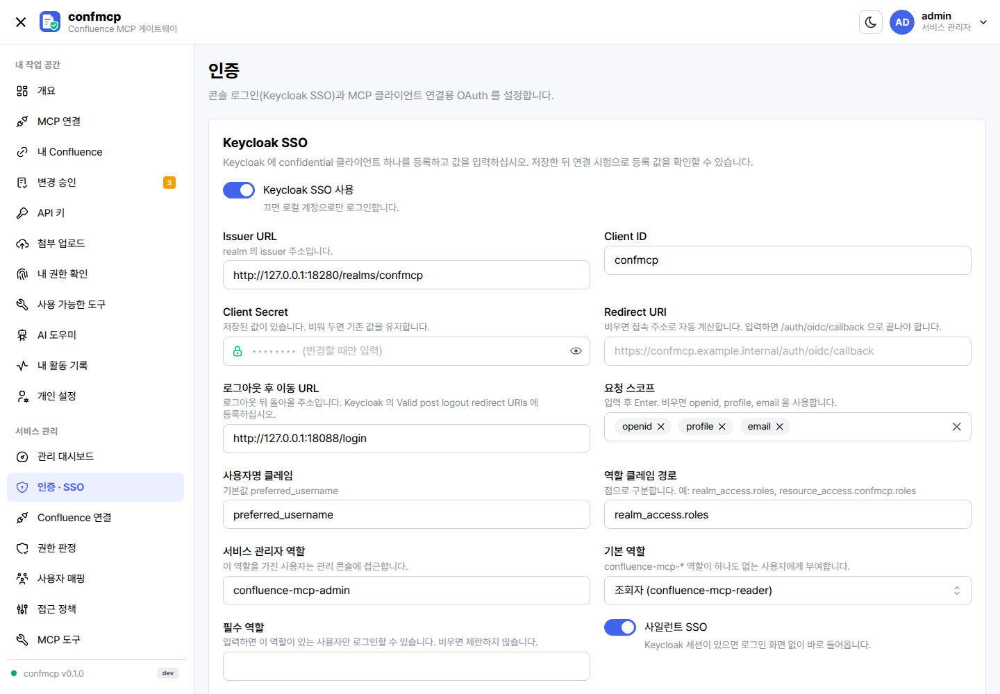
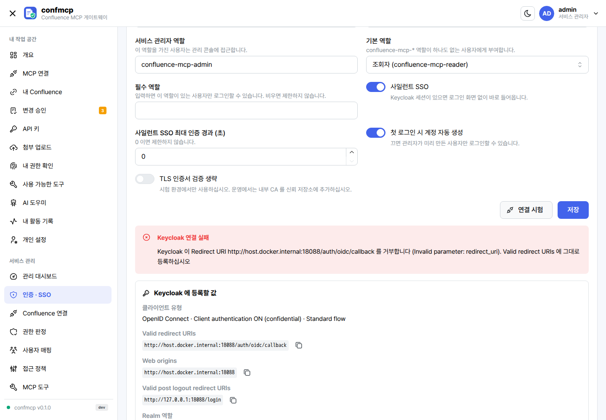
MCP 클라이언트 인증은 어떻게 동작하나요?
confmcp 자체가 MCP 클라이언트의 OAuth 2.1 인가 서버입니다. 사용자는 위의 같은 Keycloak 클라이언트로 로그인하므로 Keycloak 에 MCP 용 클라이언트·루프백 redirect·audience 매퍼를 추가로 만들 필요가 없습니다.
- 엔드포인트:
/.well-known/oauth-protected-resource/mcp,/.well-known/oauth-authorization-server,/oauth/register(RFC 7591 동적 등록),/oauth/authorize(PKCE S256),/oauth/token,/oauth/revoke - 등록 제한: redirect URI 는 10개 이하, 루프백 http(포트 무관), https, 역도메인 형식 전용 스킴만 허용합니다.
- 토큰: 액세스 토큰은 불투명 값으로 해시만 저장하고 1시간 유효하며 MCP 리소스에 바인딩됩니다. refresh 토큰은 30일, 쓸 때마다 교체되고 이미 교체된 refresh 토큰이 다시 쓰이면 그 연결(grant) 전체를 폐기합니다.
- 권한 범위: 사용자의 Keycloak 역할에서 스코프를 계산하므로 OAuth 호출과 API 키 호출이 같은 스코프 검사를 거칩니다.
| 설정 (인증 · SSO → MCP OAuth) | 기본값 | 설명 |
|---|---|---|
| MCP OAuth 사용 | 켜짐 | 끄면 API 키로만 연결합니다. |
| 동의 화면 생략 | 꺼짐 | 로그인한 사용자에게 연결 동의 화면을 보이지 않습니다. 로컬에서 몰래 실행된 프로세스가 토큰을 받아 가지 못하도록 끈 상태를 권장합니다. |
| Keycloak 발급 토큰도 허용 | 꺼짐 | Keycloak 에 직접 설정한 클라이언트를 위한 옵션입니다. 켜려면 허용 audience 를 하나 이상 입력해야 하며, 토큰의 aud 가 목록에 있어야 합니다. azp 만 맞는 토큰은 받지 않습니다(audience 엄격 검사). |
MCP OAuth 점검은 MCP 주소, 보호 리소스·인가 서버 메타데이터 URL, Claude Code 연결 명령을 보여 줍니다. 클라이언트가 연결되지 않으면 같은 화면의 최근 OAuth 탐색 기록에서 어느 단계(401 응답, 메타데이터, 등록, 인가, 토큰)에서 멈췄는지 확인하십시오. /mcp 응답에는 버전 헤더가 붙어 어느 빌드가 응답하는지 알 수 있습니다.
Confluence 는 어떻게 연결하나요?
| 항목 | 기본값 | 설명 |
|---|---|---|
| Confluence 기본 URL | 컨텍스트 경로까지 포함합니다. 예: https://wiki.example.internal/confluence | |
| 서비스 계정 사용자명 · 비밀번호 | 게이트웨이가 REST 를 호출할 전용 계정. Confluence 7.2.0 에는 개인 액세스 토큰(PAT, 7.9 부터)이 없어 HTTPS Basic 인증을 씁니다. 비밀번호는 암호화해 저장합니다. | |
| 실행 방식 | 서비스 계정 | 서비스 계정: REST 는 서비스 계정으로, 요청자 권한은 권한 플러그인으로 확인. 사용자 위임: 요청자 본인의 검증된 Confluence 자격증명으로 실행. |
| 사용자 본인 자격증명 연결 허용 | 꺼짐 | 사용자가 [내 Confluence]에서 자신의 비밀번호를 등록할 수 있게 합니다. 위임 실행·위임 판정과 "본인 로그인 확인" 매핑에 필요합니다. |
| 같은 사용자 디렉터리 신뢰 | 꺼짐 | Keycloak 과 Confluence 가 같은 디렉터리를 쓴다는 관리자 선언. 켜면 첫 로그인 때 사용자명이 정확히 일치하는 계정과 자동 매핑합니다. |
| 인스턴스 ID | default | 매핑·감사 기록을 구분하는 이름. 보통 그대로 둡니다. |
| 응답 제한 시간 / 도구 제한 시간 | 15초 / 30초 | Confluence 요청 하나(1–120초) / MCP 도구 호출 전체(1–600초) |
| TLS 검증 생략 | 꺼짐 | 시험 환경 전용 |
저장한 뒤 연결 시험을 누르면 서비스 계정으로 로그인해 Confluence 버전과 빌드 번호를 감지하고, "감지된 서버 정보"에 기록합니다(직접 수정 불가). REST 호출은 리다이렉트를 따라가지 않으며, Confluence 가 로그인 화면(HTML)이나 SSO 리다이렉트로 답하면 성공으로 처리하지 않고 오류로 돌려줍니다.
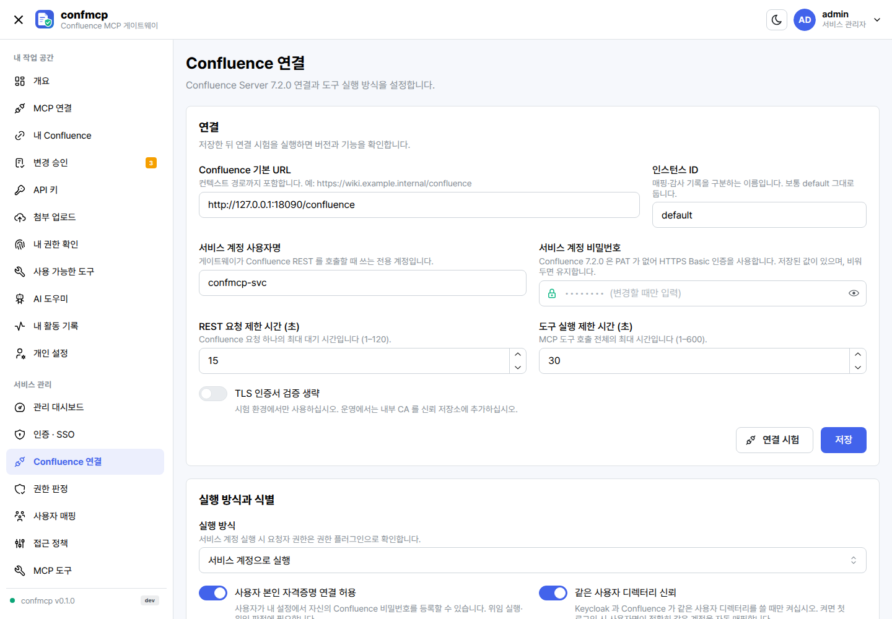
요청자 권한은 어떻게 판정하나요?
모든 도구 호출은 이 판정을 통과해야 합니다. 판정 모드는 두 가지이며, 서비스 계정이 본 REST 제한 정보로 요청자 권한을 추정하는 모드는 없습니다. 서비스 계정이 보는 제한은 요청자의 것이 아니기 때문입니다.
판정할 수 없으면 거부합니다(fail-closed). 플러그인이 없거나 응답하지 않거나 서명이 맞지 않으면 결과는 unknown 이고, unknown 은 PERMISSION_UNKNOWN 거부입니다. 판정 캐시(기본 0초 = 매번 확인, 최대 300초)는 확정된 허용·거부만 저장합니다.
권한 플러그인 모드 (기본, 권장)
Confluence 안에 설치하는 읽기 전용 플러그인 confmcp Permission Resolver 가 요청 본문의 userKey 사용자에 대해 Confluence 의 PermissionManager·SpacePermissionManager 판정을 그대로 돌려줍니다. 열람 제한은 하위로 상속되고 편집 제한은 상속되지 않는 Confluence 의미, 그룹 권한, 익명·관리자 예외가 화면과 똑같이 적용됩니다.
- 빌드 저장소의
plugin/에서 JDK 8 · Maven 3.6+ 로 빌드합니다(Atlassian 공개 Maven 저장소 접근 필요). 결과물은target/confmcp-permission-plugin-0.1.0.jar입니다.cd plugin && mvn package # 로컬에 Maven 이 없으면 docker run --rm -v "$PWD/plugin":/src -v confmcp-m2:/root/.m2 -w /src \ maven:3.9-eclipse-temurin-8 mvn -B package - 설치 (UPM) Confluence 시스템 관리자로 설정 → 앱 관리 → 앱 업로드에서 JAR 를 올립니다. "confmcp Permission Resolver" 가 사용 상태면 완료입니다. 재시작은 필요 없고, Data Center 는 UPM 이 모든 노드에 설치합니다.
- 공유 비밀 생성 콘솔 → 권한 판정에서 플러그인 공유 비밀(16–512자)을 입력하거나 생성으로 만들고 저장합니다. 생성한 값은 저장 직후 한 번만 보이므로 바로 복사합니다. 플러그인 URL 은 비우면 Confluence 기본 URL 을 씁니다.
- Confluence 에 같은 비밀 저장
값은 Confluence 전역 플러그인 설정에 저장되어 Data Center 의 모든 노드가 같은 값을 씁니다. 없으면 JVM 속성curl -u admin:관리자비밀번호 -X PUT \ 'https://wiki.example.com/confluence/rest/confmcp/1.0/config' \ -H 'Content-Type: application/json' -H 'X-Atlassian-Token: no-check' \ -d '{"secret":"<콘솔에 넣은 것과 같은 값>"}' # → {"configured":true,"source":"pluginSettings"}-Dconfmcp.secret=…을 대신 쓰고, 둘 다 없으면 서명 엔드포인트는503 secret not configured로 닫혀 있습니다. 값을 돌려주는 API 는 없습니다. - 상태 확인 콘솔의 플러그인 상태 확인이 서명된
GET /rest/confmcp/1.0/health를 보내{"status":"ok","pluginVersion":"0.1.0","confluenceVersion":"7.2.0",…}를 보여 줍니다. 서명 없이 직접 호출하면401 missing signature headers가 정상입니다.
서명 방식
판정·사용자·상태 API 는 모두 HMAC-SHA256(secret, METHOD \n 요청 경로(컨텍스트 경로 포함) \n sha256(본문) \n timestamp \n nonce) 서명이 맞아야 응답합니다(헤더 X-Confmcp-Timestamp, X-Confmcp-Nonce, X-Confmcp-Signature). 타임스탬프가 ±5분을 벗어나면 거부하고, 한 번 쓴 nonce 는 10분간 기억해 재전송을 막습니다. 그래서 일반 Confluence 사용자는 다른 사람의 권한을 물어볼 수 없습니다. nonce 캐시는 노드별이므로 게이트웨이와 Confluence 사이 구간은 TLS 로 보호하십시오.
플러그인 API
| 메서드 | 경로 (<기본 URL>/rest/confmcp/1.0/) | 설명 |
|---|---|---|
| GET | health | 플러그인·Confluence 버전 |
| POST | permissions/check | 대상 1건 판정 |
| POST | permissions/batch | 최대 100건 판정, 요청 순서대로 응답 |
| POST | users | 사용자 조회(활성 여부, 여러 디렉터리 중복) |
| GET · PUT · DELETE | config | 공유 비밀 설정 (Confluence 시스템 관리자 로그인) |
결과는 연산별 allow / deny / unknown 과 사유 코드(NOT_VISIBLE, PAGE_EDIT_RESTRICTED 등)입니다. 볼 수 없는 콘텐츠와 없는 콘텐츠는 똑같이 deny / NOT_VISIBLE 이고, 비활성 사용자는 모든 연산이 deny, 휴지통·초안 콘텐츠는 열람 외 연산이 deny 입니다.
롤백: 플러그인을 비활성화·제거하기 전에 콘솔에서 판정 모드를 먼저 사용자 위임으로 바꾸십시오. 그렇지 않으면 fail-closed 에 따라 도구 호출이 거부됩니다.
사용자 위임 모드
요청자 본인의 Confluence 자격증명으로 대상을 조회하고(보이지 않으면 거부), Confluence 의 operations 정보로 작성·편집·댓글·첨부·삭제 가능 여부를 판정합니다. Confluence 가 알려 주지 않는 연산은 unknown 으로 거부합니다. 이 모드를 쓰려면 Confluence 연결에서 "사용자 본인 자격증명 연결 허용"을 켜고, 사용자마다 [내 Confluence]에서 자격증명을 연결해야 합니다. 연결된 자격증명의 userKey 가 매핑과 다르면 호출을 거부합니다.
권한 판정 화면 아래의 판정 시험에 사용자명과 공간 키 또는 콘텐츠 ID 를 넣으면, 그 사용자의 Confluence 권한 결과(정책 미반영)를 작업별로 볼 수 있습니다.
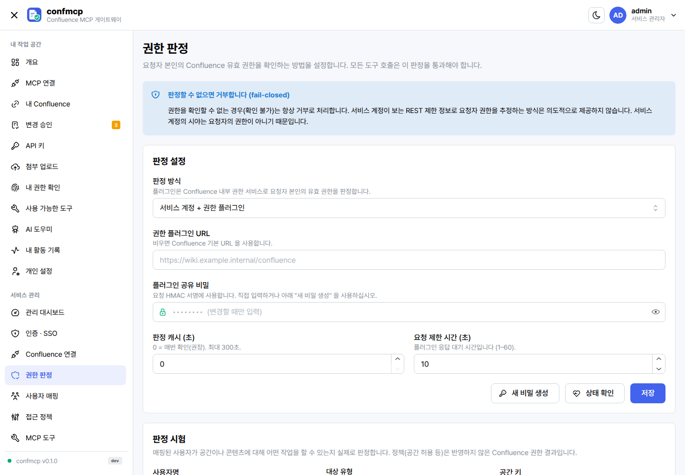
사용자 매핑은 어떻게 관리하나요?
영구 식별자는 (Keycloak issuer, sub) ↔ (인스턴스, Confluence userKey) 입니다. 사용자명은 후보를 찾는 데만 쓰고, 이름·이메일을 느슨하게 비교하지 않습니다. 매핑이 없는 사용자는 MCP 도구를 쓸 수 없습니다(IDENTITY_UNMAPPED).
| 근거 | 성립 조건 |
|---|---|
| 같은 디렉터리 (자동) | "같은 사용자 디렉터리 신뢰"가 켜져 있고, 첫 로그인 때 사용자명이 정확히 일치하는 활성 계정이 하나일 때. 같은 이름이 여러 디렉터리에 있으면 거부합니다. |
| 관리자 확인 | [사용자 매핑]에서 콘솔 사용자명과 Confluence 사용자명으로 직접 연결. 저장할 때 계정 존재와 userKey 를 확인합니다. |
| 본인 로그인 확인 | 사용자가 본인 Confluence 계정으로 로그인해 소유를 증명 |
- 재확인: 저장된 userKey 가 아직 있고 활성인지 확인합니다. 계정이 삭제되었거나 비활성이면 매핑을 비활성으로 바꿉니다.
- 재생성 계정 비승계: 같은 사용자명이 이제 다른 userKey 를 가리키면(계정을 지우고 다시 만든 경우) 매핑을 옮기지 않고 비활성화합니다. 새 계정과는 관리자가 다시 연결해야 합니다.
- Confluence 계정 하나는 Keycloak 주체 하나에만 매핑되고, 자동 매핑은 기존 매핑을 다른 계정으로 바꾸지 않습니다.
- 매핑 실패 기록: 로그인이나 도구 호출 중 계정을 찾지 못한 사유와 횟수가 쌓입니다. 원인을 해결한 뒤 비우십시오.
- 변경 이력: 매핑 생성·재확인·활성 변경·삭제를 기록합니다(최근 100건).
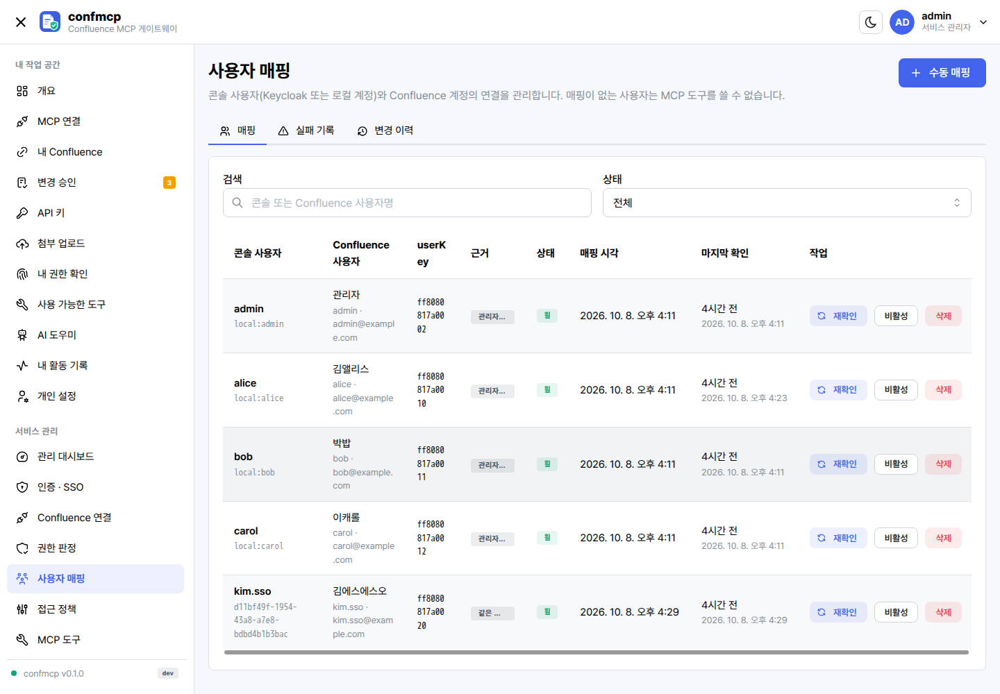
접근 정책은 어떻게 동작하나요?
접근 정책은 MCP 가 닿을 수 있는 범위를 Confluence 권한 위에서 더 좁히기만 합니다. 판정은 요청자가 보낸 공간 키가 아니라 Confluence 에서 다시 읽은 실제 공간과 상위 경로로 합니다.
| 종류 | 의미 |
|---|---|
| 공간 | 명시적 허용: 허용 규칙에 걸린 공간만 접근 가능. 차단 규칙이 걸리면 항상 차단이 우선. 패턴은 대소문자 무시, 와일드카드 가능(예: DEV, DEV*, *). |
| 페이지 트리 | 최상위 페이지 ID 로 지정하며 그 페이지와 모든 하위에 적용. 차단은 트리 전체를 막습니다. 공간을 지정한 허용 규칙이 있으면 그 공간은 허용된 트리 안에서만 접근할 수 있습니다. 댓글·첨부는 속한 페이지의 트리로 판정합니다. |
| 콘텐츠 유형 | page, blogpost, comment, attachment. 차단은 그 유형을 막고, 허용 규칙이 하나라도 있으면 그중 하나와 맞아야 합니다. |
- 위험도 상한: 허용 규칙에 상한(READ / WRITE / EXECUTE)을 걸면 그 대상에서는 그 등급까지만 쓸 수 있습니다. 여러 규칙이 걸리면 가장 낮은 상한이 적용됩니다. 예: 운영 공간은 READ 상한으로 조회만 허용.
- 우선순위: 숫자가 작을수록 먼저 평가합니다.
- 정책 세대: 규칙을 바꿀 때마다 세대가 올라가고, 이전 세대에서 받은 승인은
APPROVAL_STALE로 무효가 됩니다. - 라벨은 일반 편집자가 바꿀 수 있어 보안 경계가 될 수 없으므로 정책 대상이 아닙니다.
- 규칙이 하나도 없으면 MCP 는 어떤 공간에도 접근할 수 없습니다.
판정 미리보기에 공간 키나 콘텐츠 ID 를 넣으면 정책 결과를 미리 봅니다. 콘텐츠 ID 를 넣으면 실제 공간과 상위 페이지를 Confluence 에서 읽어 판정하고, 사용자명을 넣으면 그 사용자의 Confluence 권한도 함께 확인합니다.
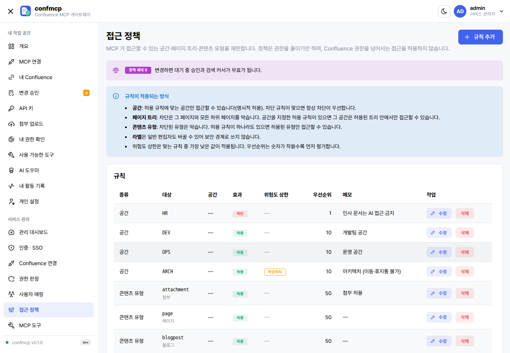
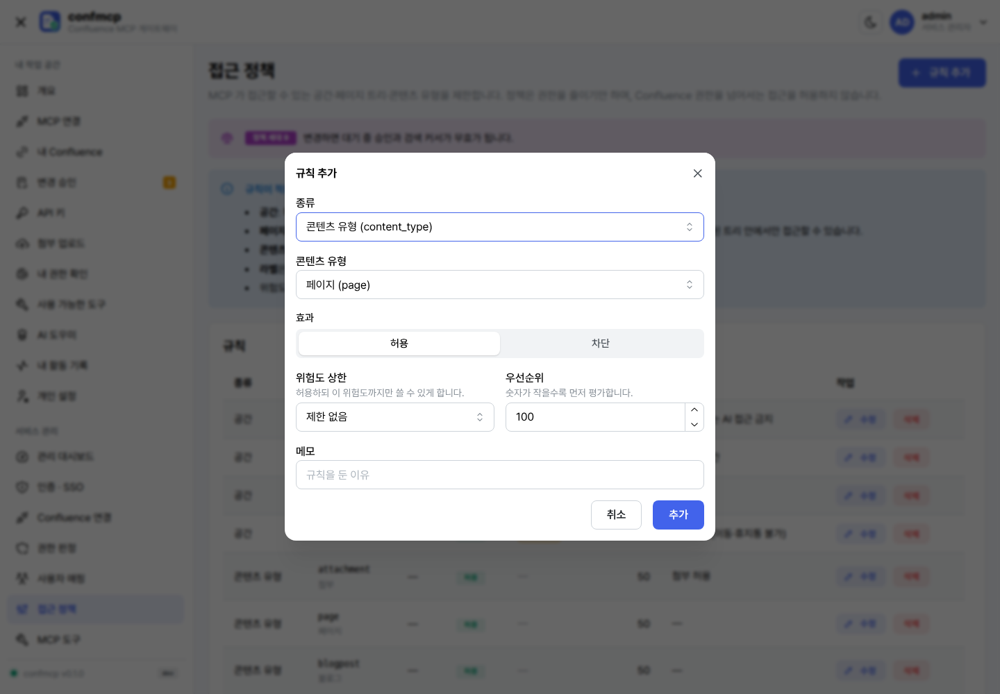
MCP 도구는 어떻게 관리하나요?
도구 28종(P0 조회 17 · P1 작성·첨부 7 · P2 고위험 4) 각각에 대해 세 가지를 바꿀 수 있습니다. 도구 목록과 설명은 사용자 가이드의 도구 표를 보십시오.
- 활성화: 끄면 목록에서 사라지고 호출은
TOOL_DISABLED. P2(블로그 작성, 라벨 제거, 페이지 이동, 휴지통)는 기본 비활성입니다. - 승인 필요: 쓰기 도구는 기본으로 켜져 있습니다. 위험도 EXECUTE 도구(이동·휴지통)는 승인을 끌 수 없고 항상 별도 승인자가 필요합니다.
- 최소 역할: 기본은 위험도에 따라 READ → 조회자, WRITE → 작성자, EXECUTE → 승인자.
confluence_prepare_change는 작성자입니다.
여러 단계를 묶은 고수준 도구(confluence_page_context, confluence_space_context)의 노출 여부는 보안 → MCP 게이트웨이에서 정합니다. 도구 행을 펼치면 입력 스키마를 볼 수 있습니다.
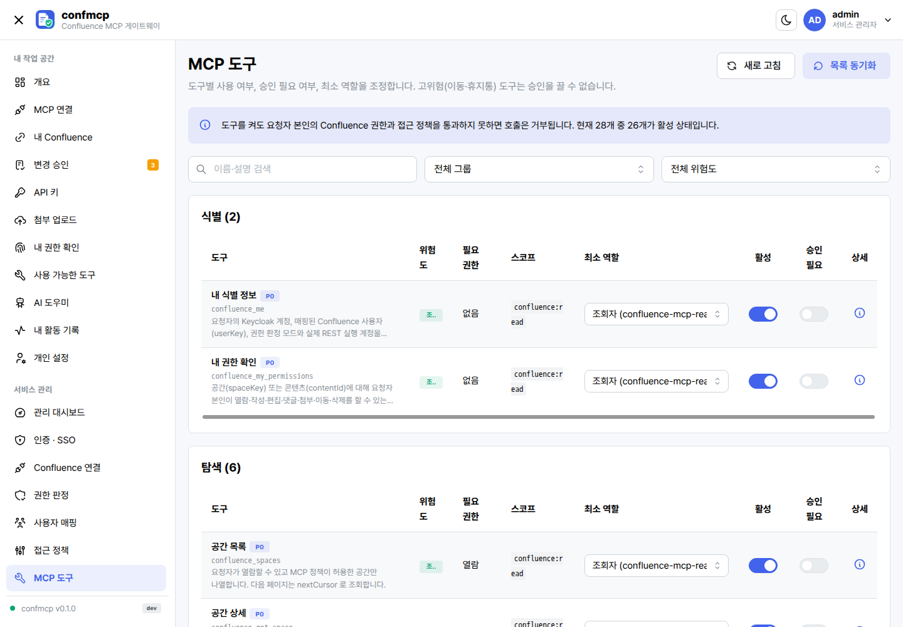
변경 승인은 누가 할 수 있나요?
- 본인 승인: 보안 설정 "본인 승인 허용"(기본 켜짐)이면 요청자가 자신의 WRITE 등급 변경을 승인할 수 있습니다. 끄면 모든 변경에 승인자가 필요합니다.
- 별도 승인자가 필요한 작업: EXECUTE 등급(페이지 이동, 휴지통)은 본인 승인 설정과 관계없이 요청자가 아닌 승인자(
confluence-mcp-approver이상)가 승인해야 합니다. - 승인자는 대상 문서를 볼 수 있어야 합니다: 다른 사람의 변경안은 승인자 본인이 Confluence 에서 그 문서를 열람할 수 있을 때만 상세를 보고 승인할 수 있습니다. 관리자도 예외가 아닙니다.
- 승인 유효 시간은 보안 설정(기본 30분)입니다. 승인은 인자, 대상 버전, 원문 해시, 정책 세대에 묶이며 한 번만 소비됩니다.
[변경 승인] 관리 화면은 모든 사용자의 승인 요청을 상태별로 보여 주고, 행을 누르면 diff 를 확인해 승인·거절할 수 있습니다(위 규칙 동일 적용).
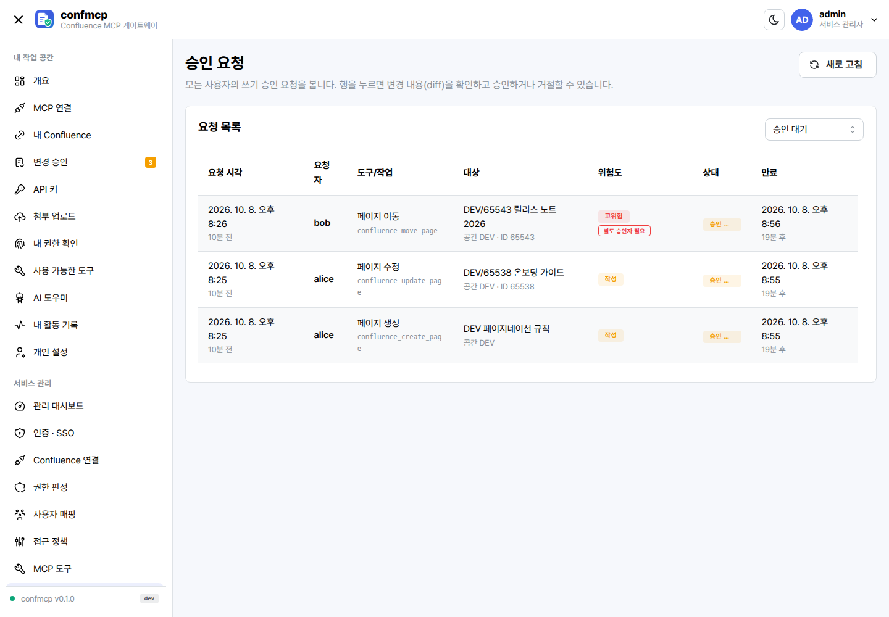
쓰기 결과가 불명확하면 어떻게 정리하나요?
[쓰기 작업 기록]은 승인된 변경이 Confluence 에 실제로 적용된 기록입니다. 같은 요청은 멱등 키로 한 번만 실행됩니다. 쓰기 요청을 보냈는데 응답을 받지 못했거나(타임아웃, 연결 끊김), 응답 후 재조회 검증에 실패했거나, 실행 중 서비스가 재시작되면 상태가 결과 불명확(outcome_unknown)이 되고 사용자는 OUTCOME_UNKNOWN 을 받습니다. confmcp 는 이런 쓰기를 자동으로 다시 보내지 않습니다.
- 대상 확인 기록의 대상 ID 로 Confluence 페이지 기록(버전 이력)이나 첨부·댓글을 열어 실제로 반영되었는지 봅니다.
- 정리 "결과 불명확 작업"에서 해당 기록을 성공 또는 실패로 정리하고, 확인한 내용(예: "버전 14 로 반영 확인")을 메모로 남깁니다. 정리 내용은 감사 로그에 남습니다.
- 사용자 안내 실패로 정리했다면 사용자에게 새 변경안을 만들도록 알립니다. 같은 승인으로는 다시 실행되지 않습니다.
대기 중인 결과 불명확 건수는 대시보드 경고와 confmcp_operation_outcome_unknown 지표로도 보입니다.
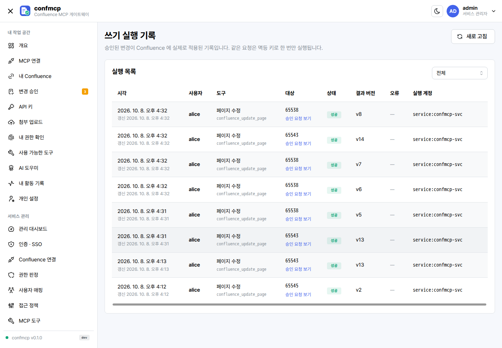
MCP 연결 현황에서는 무엇을 관리하나요?
- OAuth 클라이언트: MCP 클라이언트가 동적 등록으로 만든 클라이언트입니다. 차단하면 그 클라이언트로 맺은 모든 사용자 연결이 철회됩니다.
- 사용자 연결(grant): 사용자가 클라이언트에 허락한 연결입니다. 철회하면 해당 연결의 토큰이 즉시 무효가 됩니다.
- MCP 세션: 최근 MCP 세션 기록입니다.
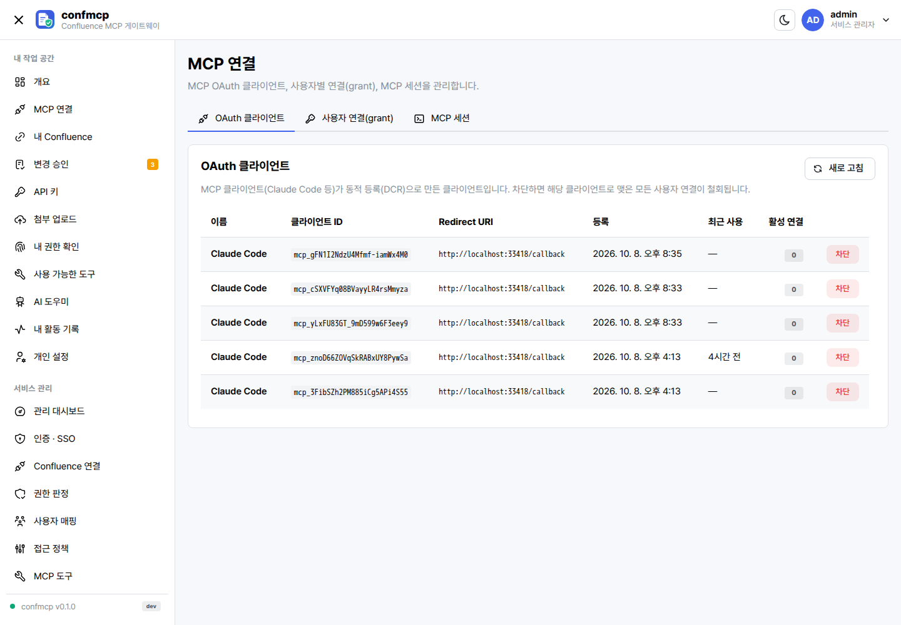
API 키와 권한 체계는 어떻게 관리하나요?
- 권한 체계(역할 → 스코프): 키 역할은 스코프 묶음이며 콘솔에서 편집합니다. 기본 역할도 스코프는 바꿀 수 있지만 삭제할 수는 없습니다. 스코프:
confluence:read,confluence:attachment:read,confluence:write,confluence:attachment:write,confluence:execute,ai:invoke,admin:read,admin:write. - 실제 허용 범위 = 키 스코프 ∩ 소유자의 현재 역할이 허용하는 범위. 그 위에 소유자의 Confluence 권한이 다시 적용됩니다.
- 키 정책 (기본값): 기본 역할
reader, 회전 주기 90일, 유효 기간 365일, 사용자당 최대 5개, 본인 발급 허용, 회전 유예 24시간. - 관리자 회전·폐기: 모든 사용자의 키를 회전하거나 사유를 남기고 폐기할 수 있습니다. 키 비밀값은 저장하지 않으므로 회전하면 새 값을 한 번만 보여 줍니다.
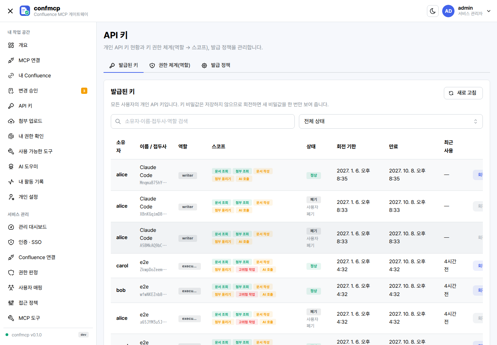
사용자는 어떻게 관리하나요?
콘솔 사용자(Keycloak 과 로컬 계정)와 MCP 역할을 관리합니다. 로컬 계정을 만들고(비밀번호 10자 이상), 표시 이름·이메일·역할·서비스 관리자 여부를 바꿀 수 있습니다.
- Keycloak 사용자의 역할은 로그인할 때마다 토큰의 역할로 갱신되므로, 여기서 바꾼 역할은 다음 로그인 때 덮어써질 수 있습니다. 역할은 Keycloak 에서 관리하십시오.
- 사용자를 비활성화하면 로그인 세션과 MCP OAuth 연결이 즉시 종료됩니다.
- 서비스 관리자는 관리 화면 접근 권한일 뿐 문서 권한을 우회하지 않습니다.
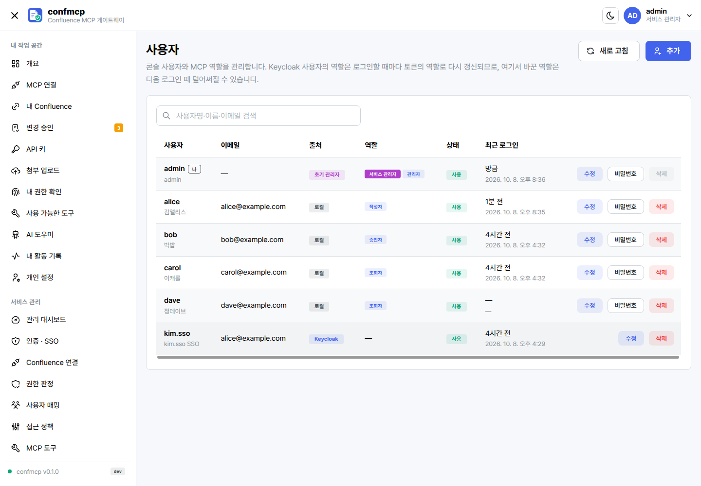
운영 한도의 기본값은 무엇인가요?
도구 호출 하나가 읽거나 돌려줄 수 있는 양입니다. 범위를 벗어난 값은 저장할 때 안전한 범위로 조정됩니다.
| 항목 | 기본값 | 허용 범위 |
|---|---|---|
| 기본 목록 크기 | 20 | 1 – 목록 최대 |
| 목록 최대 | 100 | 1 – 500 |
| 본문 최대 글자 수 | 20,000자 | 500 – 2,000,000 |
| 컨텍스트 최대 문서 수 | 10문서 | 1 – 50 |
| 컨텍스트 최대 글자 수 | 80,000자 | 1,000 – 2,000,000 |
| 트리 깊이 | 5 | 1 – 20 |
| 트리 노드 수 | 200 | 1 – 2,000 |
| 검색 추가 조회 페이지 | 3 | 0 – 10 (권한·정책으로 걸러진 만큼 더 읽어 옴) |
| 업로드 최대 크기 | 10 MiB | 1 – 512 MB |
| 업로드 보관 시간 | 60분 | 5 – 1,440분 |
| 변경 제안 보관 시간 | 24시간 | 1 – 720시간 |
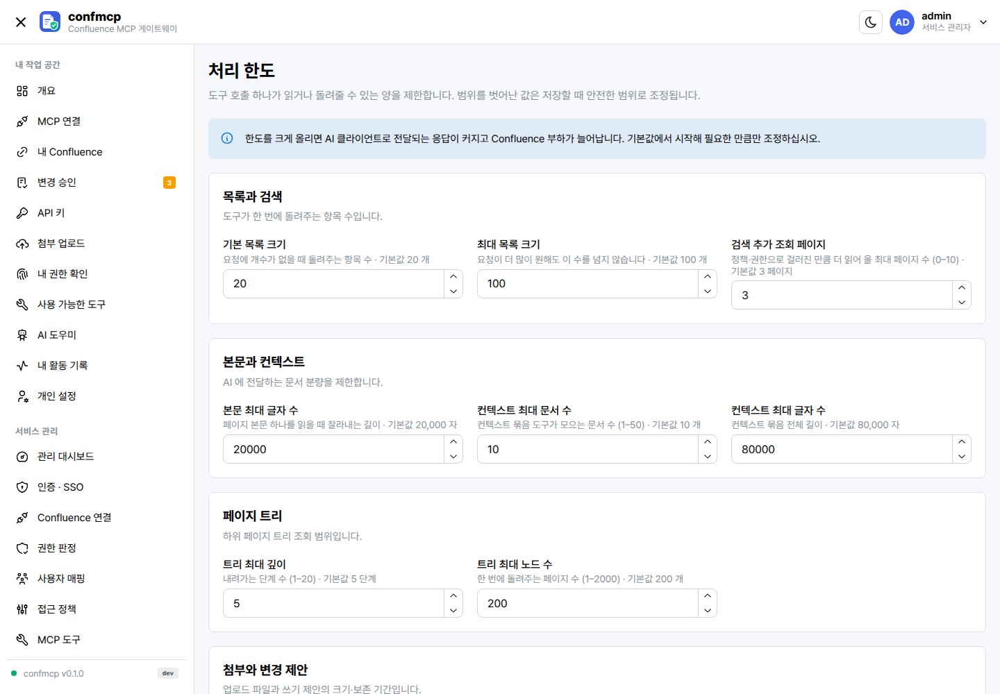
AI 도우미는 어떻게 설정하나요?
콘솔 [AI 도우미]가 쓰는 모델입니다. 끄면 AI 도우미와 AI 호출 스코프가 모두 비활성화됩니다.
- 제공자: Anthropic Messages API 또는 OpenAI 호환(vLLM, Ollama, 사내 게이트웨이 등). 오프라인망에서는 Base URL 에 사내 추론 게이트웨이 주소를 넣습니다. API 키는 암호화해 저장합니다.
- 스트리밍: 기본 켜짐. 응답을 SSE 로 중계합니다.
- 최대 출력 토큰: 기본 16,384, 최대 524,288(512k)까지 설정할 수 있습니다. 긴 출력을 고려해 응답 제한 시간(기본 600초)을 넉넉히 두십시오.
- 허용 모델 목록: 사용자에게 보여 줄 모델들입니다. 기본 모델은 사용자가 고르지 않을 때 씁니다.
- 시스템 프롬프트: 문서 내용을 신뢰할 수 없는 데이터로 다루도록 지시하는 문장을 유지하십시오.
저장한 뒤 연결 시험을 누르면 저장된 설정으로 짧은 요청을 보냅니다.
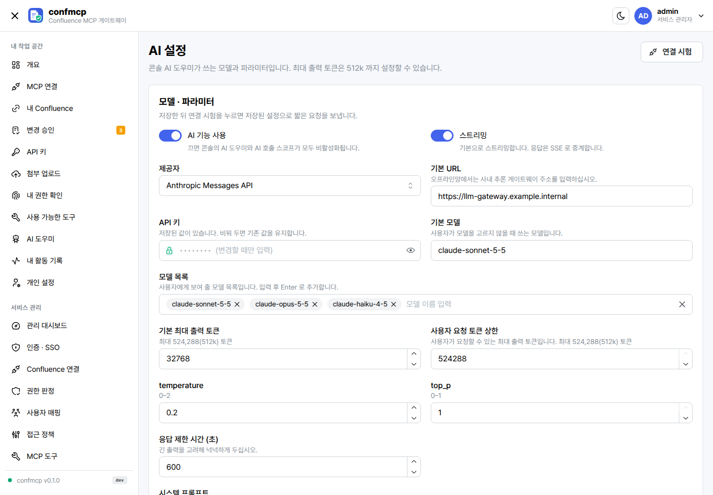
보안 설정에는 무엇이 있나요?
| 항목 | 기본값 | 설명 |
|---|---|---|
| 허용 IP 목록 | (비움 = 모두 허용) | IP 또는 CIDR. 목록에 없는 주소는 콘솔과 MCP 모두 403 IP_DENIED. 관리자 주소를 반드시 포함하십시오. |
| MCP 분당 요청 한도 / 순간 허용량 | 120 / 40 | 접속 IP 별 기준. 넘으면 429 RATE_LIMITED. |
| 로그인 세션 유지 | 480분 | |
| 승인 요청 유효 시간 | 30분 | 이 시간 안에 승인·실행하지 않으면 만료 |
| 본인 승인 허용 | 켜짐 | WRITE 등급만 해당. 이동·휴지통은 항상 별도 승인자 |
| 감사 보존 기간 | 365일 | 0 이면 정리하지 않음 |
| 프록시 헤더 신뢰 | 켜짐 | 리버스 프록시 뒤에서 X-Forwarded-For/X-Real-IP 로 실제 주소 판단. 끄면 IP 허용 목록과 요청 한도가 프록시 주소 기준으로 동작합니다. 프록시 없이 직접 노출한다면 끄십시오. |
MCP 게이트웨이
| 항목 | 기본값 | 설명 |
|---|---|---|
| 서버 이름 | confmcp | MCP initialize 응답에 표시 |
| 공개 URL | 사용자가 접속하는 외부 주소. OAuth 발급자와 콘솔 링크 생성에 사용 | |
| 최대 응답 크기 | 512 KB | 도구 응답 하나의 상한 |
| 고수준 도구 노출 | 켜짐 | 맥락 수집 도구를 클라이언트에 보여 줌 |
| CQL 직접 입력 허용 | 꺼짐 | 고급 기능. 켜도 허용 공간 조건이 항상 함께 붙습니다. |
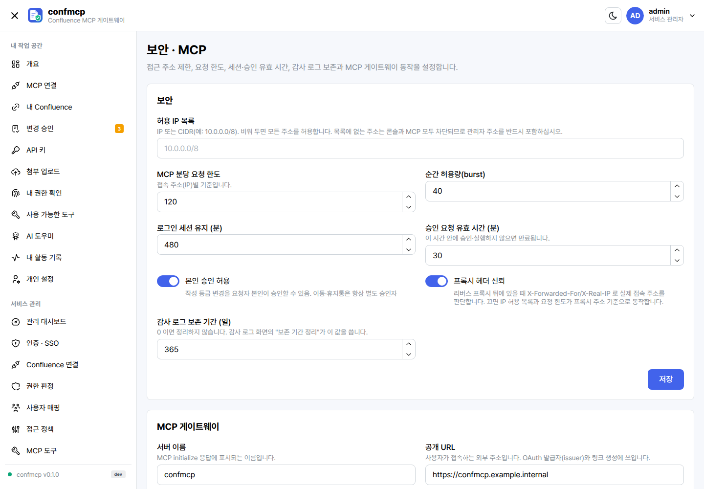
화면 설정으로 무엇을 바꾸나요?
모든 사용자에게 적용되는 표시 설정입니다: 서비스 이름(머리글·브라우저 제목), 부제, 대표 색상(기본 남색 외 파랑·하늘·초록·자주·주황 등), 기본 글자 크기(0.85–1.4, 사용자가 개인 설정에서 따로 바꿀 수 있음), 기본 테마, 로그인 화면 안내문(사용 목적·문의처, 텍스트로만 표시). 저장 전 미리보기가 함께 보입니다.
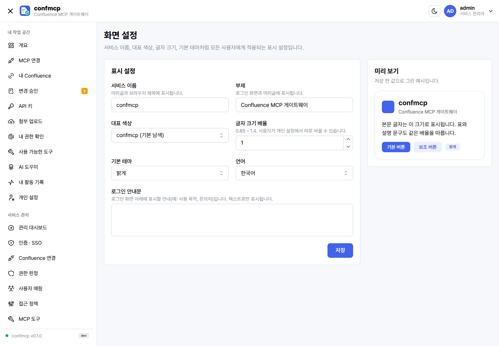
감사 로그와 지표는 어디서 보나요?
[감사 로그]에는 로그인, 도구 호출, 쓰기, 거부, 승인, 관리 변경이 모두 남습니다. 각 기록에는 Keycloak 사용자, 매핑된 Confluence 사용자, 실제 실행 계정, MCP 클라이언트, 인증 방식, 도구, 공간·콘텐츠 ID·버전, 판정, 승인 ID, 결과 코드, 지연, IP 가 들어가며 비밀값과 문서 본문은 기록하지 않습니다. 분류·사용자·결과 코드·콘텐츠 ID 로 거르고, 행을 누르면 상세를 봅니다. 보존 기간이 지난 기록은 정리할 수 있습니다.
[관리 대시보드]는 연결 상태, 설정 경고, 최근 24시간 호출 수·오류율·권한·정책 거부·응답 시간 p95, 시간대별 호출 추이, 최근 7일 상위 도구를 30초마다 갱신해 보여 줍니다.
Prometheus 지표 (/metrics)
| 지표 | 설명 |
|---|---|
confmcp_build_info | 버전·커밋 레이블 |
confmcp_tool_requests_total / confmcp_tool_errors_total | 도구 호출 수 / 실패 수 |
confmcp_permission_denied_total | 권한·정책 거부 수 (PERMISSION_DENIED, POLICY_DENIED, PERMISSION_UNKNOWN) |
confmcp_identity_mapping_errors | 매핑 실패 기록 수 |
confmcp_approval_pending | 대기 중 승인 수 |
confmcp_operation_outcome_unknown | 결과 불명확 쓰기 수 |
confmcp_api_keys_active · confmcp_oauth_grants_active · confmcp_mcp_sessions_active | 활성 API 키 · OAuth 연결 · 최근 1시간 MCP 세션 |
/metrics, /healthz, /readyz 는 로그인 없이 응답합니다(IP 허용 목록은 적용). 외부에 노출하지 않도록 네트워크나 프록시에서 제한하십시오.
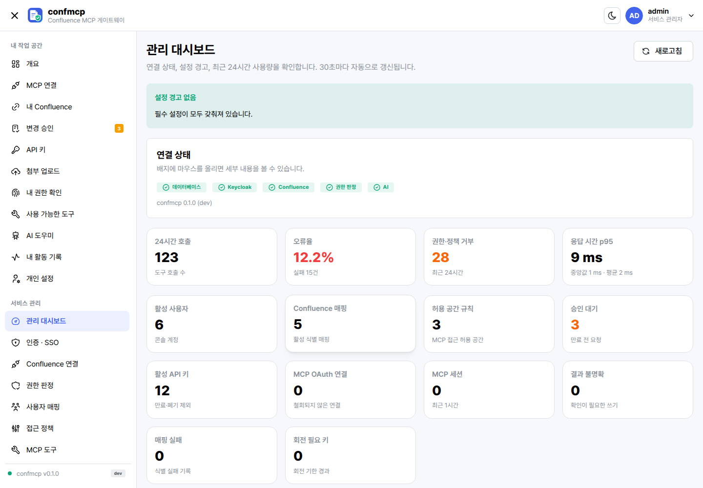
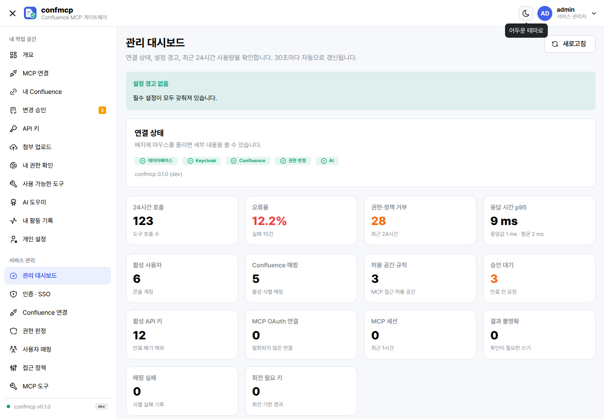
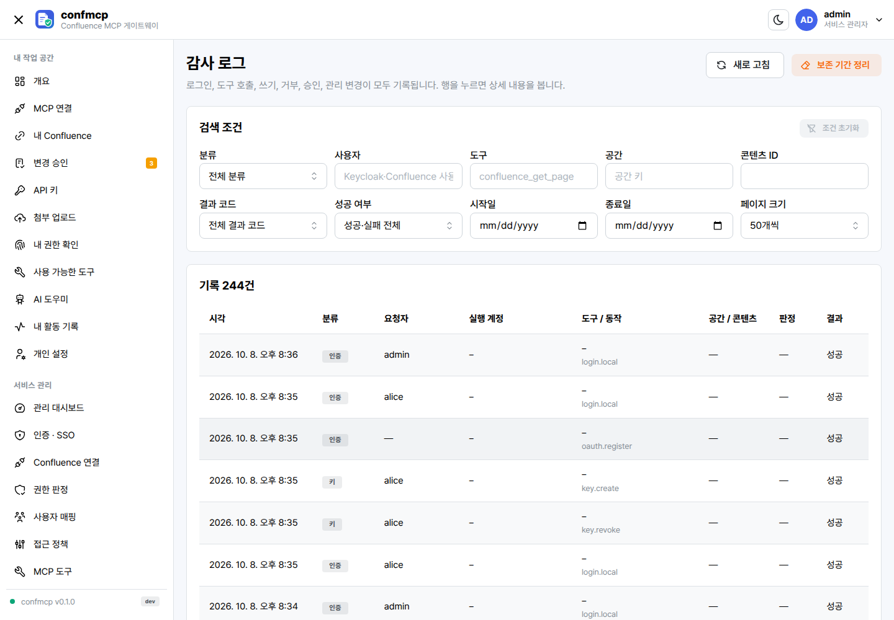
시스템 화면에서는 무엇을 확인하나요?
버전(버전·커밋·빌드 날짜), 의존 서비스 상태(PostgreSQL, Keycloak, Confluence, 권한 판정), 데이터베이스와 적용된 마이그레이션(스키마 버전), MCP 도구 호출 통계(호출 수, 오류율, 평균·p50·p95 지연, 기간별 막대 그래프), confmcp 가 읽는 환경변수 네 가지를 봅니다. 통계의 실패에는 거부와 승인 대기가 포함되지 않습니다.
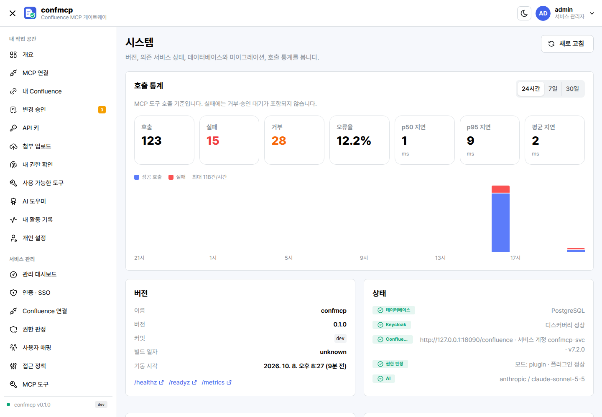
문제가 생기면 어디부터 보나요?
| 증상 | 원인과 조치 |
|---|---|
/mcp 가 401 + WWW-Authenticate | 자격증명이 없을 때는 OAuth 를 시작하는 정상 응답입니다. 토큰을 보냈는데 401(error="invalid_token")이면: 만료·폐기된 키나 철회된 연결, Keycloak 직접 토큰인데 "Keycloak 발급 토큰도 허용"이 꺼졌거나 audience 불일치. 클라이언트가 반복해서 로그인하면 공개 URL 이 실제 접속 주소와 같은지, [인증 · SSO]의 최근 OAuth 탐색 기록을 확인하십시오. |
403 IP_DENIED | 허용 IP 목록에 없는 주소. 프록시 뒤라면 "프록시 헤더 신뢰" 설정을 확인하십시오. 도구 호출의 403 성격 오류는 PERMISSION_DENIED / POLICY_DENIED / ROLE_DENIED 코드로 구분됩니다. |
권한 플러그인 404 | 플러그인 미설치·비활성, 또는 플러그인 URL 에 컨텍스트 경로(/confluence) 누락 |
권한 플러그인 401 / 503 | invalid gateway signature: 비밀값 불일치 또는 프록시가 경로를 바꿈. timestamp outside the allowed window: 서버 시계 차이 5분 초과(NTP). 503 secret not configured: 플러그인 쪽 비밀 미설정. |
409 / VERSION_CONFLICT | 그 사이 문서가 바뀌었습니다. 사용자가 최신 문서로 새 변경안을 만들면 됩니다. |
| Confluence 가 로그인 HTML 로 응답 | UPSTREAM_AUTH_FAILED: "API 응답 대신 HTML(로그인 화면)을 반환했습니다". Confluence 앞의 SSO·리버스 프록시가 REST 경로를 로그인 화면으로 돌립니다. /rest/ 경로(플러그인 /rest/confmcp/ 포함)를 서비스 계정 Basic 인증용으로 예외 처리하십시오. |
| SSO 리다이렉트 (3xx) | confmcp 는 REST 호출의 리다이렉트를 따라가지 않습니다(자격증명이 다른 호스트로 가지 않도록). 위와 같이 프록시 예외를 설정하십시오. 첨부 다운로드가 다른 호스트로 리다이렉트되는 경우도 거부합니다. |
Confluence 401 | 서비스 계정 자격증명 오류. 반복 시도하면 계정이 잠길 수 있으니 [Confluence 연결]에서 비밀번호를 고친 뒤 연결 시험으로 확인하십시오. |
PERMISSION_UNKNOWN | 판정할 수 없어 거부(fail-closed). 원인: 플러그인 미설치·비활성·응답 시간 초과(기본 10초), 공유 비밀 불일치·미설정, 시계 차이, 플러그인 URL 오류, 판정 결과의 공간과 실제 문서 공간 불일치, 사용자 위임 모드에서 Confluence 가 해당 연산을 알려 주지 않음. [권한 판정]의 상태 확인과 판정 시험으로 원인을 좁히십시오. |
IDENTITY_UNMAPPED | 매핑 없음·비활성. "같은 사용자 디렉터리 신뢰"가 꺼져 있거나, 사용자명이 정확히 일치하지 않거나, Confluence 계정이 비활성·재생성되었거나, 여러 디렉터리에 같은 이름이 있음. [사용자 매핑]의 실패 기록에 사유가 있습니다. |
POLICY_DENIED | 공간 허용 규칙 없음, 차단 규칙 또는 페이지 트리·콘텐츠 유형 제한, 위험도 상한. [접근 정책]의 판정 미리보기로 확인하십시오. |
무엇이 어디까지 검증되었나요?
v0.1.0 의 인수 시나리오(AC-01 ~ AC-20)를 어떻게 검증했는지 정리했습니다. 자동 검증은 모의 Confluence(hack/mockconfluence: 제한 페이지·충돌 시나리오를 재현하는 7.2 REST 와 권한 플러그인 모의)를 상대로 한 것이며, 모든 항목은 실제 Confluence Server 7.2.0 에서 다시 확인해야 합니다.
실환경 확인 범위: Keycloak 26.4 SSO 로그인, 사일런트 SSO, MCP OAuth 브로커 흐름(동적 등록 → 로그인 → 동의 → 토큰)은 실제 Keycloak 26.4 로 수행했습니다. 이때 Confluence 는 모의 서버였습니다.
# 모의 환경 자동 점검
scripts/dev.sh up # PostgreSQL + 모의 Confluence 7.2 + confmcp + 샘플 데이터
hack/e2e.sh # go test -tags e2e ./hack/e2e
scripts/go.sh test ./... # 단위 테스트 (internal/confluence/client_test.go 등)| ID | 시나리오 | 모의 환경 자동 검증 | 실제 Confluence 7.2.0 확인 |
|---|---|---|---|
| AC-01 | 인증: 유효한 키는 통과, 위조·임의 토큰은 401 + resource_metadata | e2e TestAC01_Authentication | 필요 |
| AC-02 | 식별 매핑: 자동 매핑은 같은 디렉터리 선언 시 정확한 사용자명만, 재생성된 계정은 기존 매핑을 승계하지 않음 | 설계로 강제 internal/identity/mapper.go, 자동화 없음 | 필요 |
| AC-03 | 검색 비노출: 열람 제한 문서가 검색 결과에 나오지 않고, 권한 있는 사용자는 찾음 | e2e TestAC03_SearchDoesNotLeak | 필요 |
| AC-04 | 상속된 열람 제한: 하위 페이지·댓글·첨부·다운로드를 "없음"과 같은 응답으로 거부, 하위 목록에서 제외 | e2e TestAC04_InheritedViewRestriction | 필요 |
| AC-05 | 편집 제한 비상속: 편집 제한 페이지는 거부, 그 하위 페이지는 편집 가능(승인 단계로 진행) | e2e TestAC05_EditRestrictionNotInherited | 필요 |
| AC-06 | 요청자 기준: 서비스 계정이 쓸 수 있어도 요청자에게 편집 권한이 없으면 거부, 조회자 역할의 쓰기는 ROLE_DENIED | e2e TestAC06_RequesterNotServiceAccount | 필요 |
| AC-07 | 판정 불가 차단: 플러그인 비밀 불일치 시 PERMISSION_UNKNOWN, 목록 유출 없음 | e2e TestAC07_PluginFailureBlocks | 필요 |
| AC-08 | include 매크로 미확장: 볼 수 없는 문서 내용이 표시자로 대체 | e2e TestAC08_IncludeMacroNotExpanded | 필요 |
| AC-09 | 오래된 승인 거부: 승인 후 외부 수정 → VERSION_CONFLICT/APPROVAL_STALE, 승인 후 인자 변경 → APPROVAL_STALE | e2e TestAC09_StaleApproval | 필요 |
| AC-10 | 한 번만 실행: 같은 승인으로 동시에 6번 호출해도 버전은 1만 증가 | e2e TestAC10_SingleExecution | 필요 |
| AC-11 | 결과 불명확: 쓰기 응답이 없으면 OUTCOME_UNKNOWN, 자동 재시도 없음 | 단위 TestWriteTimeoutIsOutcomeUnknown (internal/confluence/client_test.go) | 필요 |
| AC-12 | 매크로·코드·표 보존: replace_text 후 코드 매크로·표 유지, 매크로 문서의 replace_markdown 은 UNSUPPORTED_CONTENT | e2e TestAC12_MacrosPreserved | 필요 |
| AC-13 | 권한 플러그인 실설치: UPM 설치, 공유 비밀 설정, 서명된 health·판정 응답 | 수동 실제 환경 항목 (플러그인 단위 테스트는 plugin/src/test) | 필요 |
| AC-14 | 외부 링크: 다른 호스트를 가리키는 첨부 다운로드 링크를 따라가지 않음 | 단위 TestDownloadRefusesForeignLinks | 필요 |
| AC-15 | 컨텍스트 경로·한글 제목: /confluence 경로와 한글 제목으로 정확한 링크 생성 | e2e TestAC15_ContextPathKorean | 필요 |
| AC-16 | 로그인 HTML·SSO 리다이렉트를 성공으로 처리하지 않음 | 단위 TestLoginHTMLIsNotASuccess, TestSSORedirectIsRefused | 필요 |
| AC-17 | 페이지 커서는 발급받은 사용자에게만 유효 | e2e TestAC17_CursorBoundToUser | 필요 |
| AC-18 | Keycloak SSO·사일런트 SSO·MCP OAuth 연결 | 수동 실제 Keycloak 26.4 로 확인 (Confluence 는 모의) | 필요 |
| AC-19 | 오프라인 설치: 외부 망 없이 이미지 적재·기동·콘솔 사용 | 수동 실제 환경 항목 | 필요 |
| AC-20 | 업그레이드·백업·복구: upgrade.sh, pg_dump/pg_restore, ENCRYPTION_KEY 보관 | 수동 실제 환경 항목 | 필요 |
이 밖에 e2e 의 TestPolicyDeniesHR 는 정책으로 차단한 공간이 공간 목록에 나오지 않음을, 단위 테스트 TestBodyViewIsNeverRequested 는 매크로를 실행하는 body.view 를 요청하지 않음을 확인합니다.
실제 Confluence 7.2.0 에서 확인할 때
- 열람 제한이 걸린 상위 페이지와 하위 페이지, 편집 제한만 걸린 페이지, 그룹 권한만 있는 공간을 준비합니다.
- 권한이 다른 사용자 두 명(예: 일반 직원, 보안팀)으로 같은 검색·조회·수정 요청을 보내 결과를 비교합니다.
- [내 권한 확인] 결과가 Confluence 화면의 권한(페이지 제한, 공간 권한)과 같은지 대조합니다.
- Confluence 앞의 SSO·프록시 구성에서 REST 와 플러그인 경로가 로그인 화면으로 돌지 않는지 확인합니다.